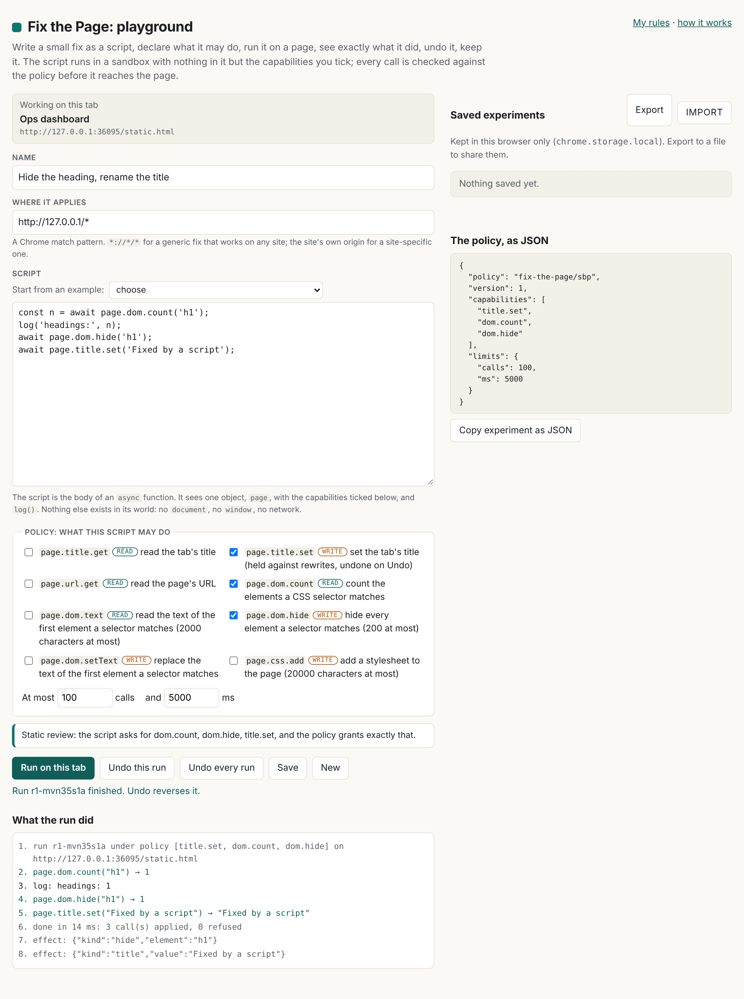

The playground
Where a fix is prototyped. Write a small script, tick what it may do, run it on the tab you came from, read what it did, undo it, keep it. Generic fixes and site-specific ones live side by side, told apart by where they apply. built

Opening it
Click the Fix the Page icon on the page you want to work on, then Playground at the top of the popup. The playground opens in a new tab, bound to the tab you came from; that binding is the activeTab grant the click gave the extension, so it lasts while that tab stays on its page. On a site you have allowed with "Always on this site", it lasts regardless. Opened on its own, the playground says so and still lets you write, save, export and import.
The script
The body of an async function. It sees one object, page, and log(). Nothing else exists in its world: no document, no window, no fetch, no chrome. The article explains why and how.
const title = await page.title.get();
const url = await page.url.get();
await page.title.set('[' + url.split('/')[2] + '] ' + title);
log('done');
Every capability returns a promise, so await each one. Seven starter examples are in the "Start from an example" menu.
The eight capabilities
| Call | Kind | Does | Returns | Undo |
|---|---|---|---|---|
page.title.get() | read | reads the tab's title | the title | nothing to undo |
page.title.set(text) | write | sets the title and holds it against the page rewriting it, like a title rule | the title | the page's own title returns |
page.url.get() | read | reads the page's address | the URL | |
page.dom.count(selector) | read | counts the elements a CSS selector matches | a number | |
page.dom.text(selector) | read | reads the text of the first match, up to 2000 characters | text, or null | |
page.dom.hide(selector) | write | hides every match, up to 200 | how many | shown again |
page.dom.setText(selector, text) | write | replaces the text of the first match | 1 or 0 | the old text returns |
page.css.add(css) | write | adds a stylesheet, up to 20000 characters | its id | removed |
Selectors must be valid CSS and at most 500 characters; text at most 20000. The engine refuses anything else, whatever asked for it. There is no verb for the network, storage, cookies, navigation or inserting markup; a policy cannot grant what does not exist.
The policy
Tick the capabilities the script needs, set the limits (at most 1000 calls and 30 seconds; the defaults are 100 and 5), and the policy appears as JSON on the right. The static review under the editor compares the script with the policy as you type:
- The script calls something the policy does not grant: not ready to run. Tick it, or take the call out.
- The policy grants something the script never uses: advice. Untick it, so the policy is as tight as the script.
- A name that has no place in a fix (
window,document,fetch,eval,chromeand others): not ready to run, with the line number. The sandbox has none of them anyway; the lint saves you the run.
Run, read, undo
Run on this tab sends the script to the sandbox. The log under the buttons shows each call as it happens: the call, what it returned, or why it was refused. When the run ends it lists the effects the engine recorded. Undo this run reverses them, in reverse order; Undo every run clears the tab of everything the playground did. Leaving or reloading the tab also clears it: nothing persists on the page.
Generic or site-specific
"Where it applies" is a Chrome match pattern, as for a title rule. *://*/* marks a generic fix, one that should work on any site, which is what the newsroom's CSS fixes are. The site's own origin, https://example.com/*, marks a site-specific one, which can name the exact element instead of guessing. The saved list labels each experiment accordingly. In 0.2 the pattern is a label and a record; running saved fixes on their own, on matching pages, is the next step and is not built.
Keeping and sharing
- Save keeps the experiment (name, pattern, policy, script, dates) in
chrome.storage.local, in this browser only. Open loads it back; Delete removes it. - Export writes every saved experiment to a JSON file; Import reads such a file back, replacing by id. A file is validated whole and refused with the experiment and field named if anything is off. Nothing in it runs until you open it and press Run.
- Copy experiment as JSON puts the one in the editor on the clipboard, to paste into a message, an issue or a pull request.
{
"format": "fix-the-page/experiments",
"version": 1,
"exported": "2026-10-25T10:00:00Z",
"experiments": [
{
"id": "x-2026-10-25-k3f9a1",
"name": "Hide the cookie banner on example.com",
"match": "https://example.com/*",
"policy": { "policy": "fix-the-page/sbp", "version": 1, "capabilities": ["dom.count", "dom.hide"], "limits": { "calls": 100, "ms": 5000 } },
"script": "const n = await page.dom.count('#cookie-banner');\nif (n) await page.dom.hide('#cookie-banner');",
"created": "2026-10-25T10:00:00Z",
"updated": "2026-10-25T10:00:00Z"
}
]
}
What it does not do yet
- Run a saved fix without the playground open, at page load, on a granted site. specified
- Insert markup, call a site's own page API, navigate. Each would be a new verb with its own rules. proposed
- Stop a script that never yields: the time limit fires between awaits, not inside a tight loop.
- Sync experiments between machines, or share them anywhere but as a file.